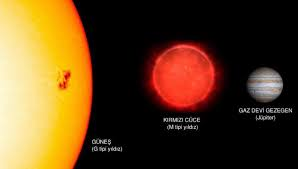

|

Kırmızı Devler ve Beyaz Cüceler
Kırmızı devler ve beyaz cüceler, yıldızların yaşam döngüsündeki iki farklı evresidir ve yıldızın kütlesine bağlı olarak birbirini takip eden aşamaları
temsil eder. Bu iki evre, yıldızın yaşlanma sürecinde geçirdiği dramatik değişimleri açıkça gösterir.
Bir yıldız, çekirdeğinde hidrojen yakıtını tükettikten sonra nükleer füzyon yavaşlar ve iç basınç azalır. Bunun sonucunda çekirdek büzülürken dış katmanlar
genişler. Bu genişleme sırasında yıldızın yüzey sıcaklığı düşer, ancak hacmi büyür ve kırmızı bir parlaklık kazanır. İşte bu döneme kırmızı dev evresi
denir. Güneş de yaklaşık 5 milyar yıl sonra bu evreye girecek ve çapı genişleyerek iç gezegenleri, muhtemelen Dünya’yı bile yutacaktır.
Kırmızı devin çekirdeğinde helyum füzyonu başlar, ancak bu da zamanla tükenir. Yakıt tamamen bittiğinde yıldız artık enerjisini sürdüremez.
Dış katmanlarını uzaya savurur ve geride yalnızca yoğun, sıcak bir çekirdek kalır. Bu çekirdeğe beyaz cüce denir.
Beyaz cüceler çok küçüktür — yaklaşık Dünya büyüklüğündedir — ancak inanılmaz derecede yoğundur. Bir çay kaşığı beyaz cüce maddesi tonlarca
ağırlığında olabilir. Parlaklıklarını artık füzyondan değil, yalnızca içlerindeki kalan ısıdan alırlar. Zamanla soğurlar ve milyarlarca yıl içinde
sönerek kara cüce haline gelirler.
Sonuç olarak, kırmızı dev yıldızın yaşlılık dönemini, beyaz cüce ise onun ölümden sonraki kalıntısını temsil eder. Bu süreç, yıldızların doğumdan
ölüme kadar nasıl enerji üretip sonunda evrene geri dönüştüğünün açık bir göstergesidir.
|